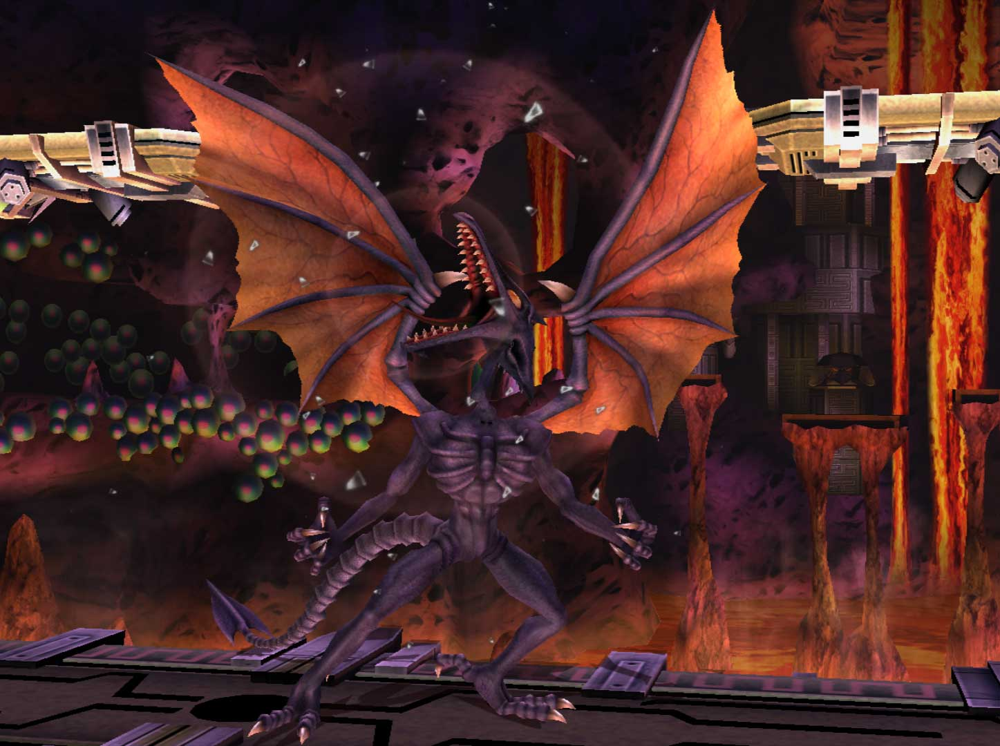

Ridley

OVERVIEW
The ferocious, sadistic, and cunning space dragon joins the battle in Project M! With razor sharp claws, unmatchable size and reach, and a stellar recovery, Ridley is a beast that should not be underestimated. Built from the ground up, this new Classic Ridley mod aims to fit Ridley seamlessly into Project M.


SPACE PIRATE RUSHDOWN
Ridley’s side special is his most unique trait, giving him the ability to rush at opponents, grab them, and carry them in the air a short distance before throwing them in 4 possible directions. This move is a go to combo starter to catch opponents off guard and set them up for a fatal finisher. Each throw has a special purpose for mixing opponents up in the air, for example his down throw in the air can meteor an opponent after being dragged off stage. Experimenting with side special in different situations will put Ridley players a cut above the rest, but be careful not to be too predictable as it has a punishing cooldown if you miss.


MENACE OF THE SKIES
Ridley’s aerial game is top notch with insane juggle potential, an exceptional recovery, and strong finishing moves. His forward air applies ruthless pressure while his back air scoops up his foes for extended combos. With down air, Ridley can safely bounce off opponents to set up for more juggles or meteor them if he spaces it closer to the opponent. Juggling opponents to the sky with up air, Ridley can use his devastating up special to quickly finish stocks if spaced right.
Along with fierce aerials, Ridley can use his neutral special to charge a deadly fireball, akin to Samus’ own charge shot. This fireball can even be charged in the air and pressing jump while charging lets Ridley hover slightly, giving him a way to retreat to the skies and apply pressure with projectiles.
Ridley also comes equipped with a tipper mechanic on most of his aerials, giving him savage combos if positioned correctly. For example, striking with the tips of Ridley’s claws will yield much greater knockback during forward air and up air. These tippers can be found on most tail moves such as back air and forward smash and offer substantial rewards for correct spacing.
Even when he’s not airborne, Ridley has plenty of tools to fling opponents up so he can continue with his aerial onslaught. Up tilt and up smash are great anti-airs that can catch unsuspecting victims while up throw physically launches you and your opponent into the air for extended combos. Dash attack and down tilt can also apply heavy pressure on grounded foes to pop them into the air. A fair amount of Ridley’s playstyle relies on starting a combo to continue into the air and dominating the skies.


SIZE MATTERS
While Ridley is an intimidating foe, his size is a double-edged sword that both helps and hurts him. He might have extra reach and a vicious combo game, but his size makes him vulnerable to anyone capable of challenging his immense range. With clever use of spacing and his own projectile, a cunning Ridley player can outwit an unprepared opponent. To utilize Ridley’s potential, one must find openings with smartly placed aerials, tricky side specials, and cold-blooded edgeguards.